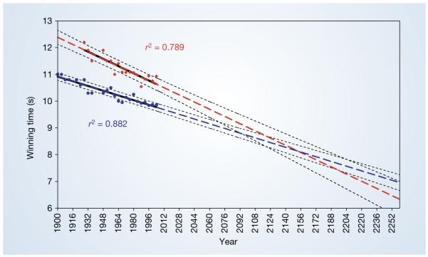

第 11 章 探索性数据分析2
这是Nature期刊上的一篇文章Nature. 2004 September 30; 431(7008)，

在文章补充材料里，我们找到了文章使用的数据，现在的任务是，重复这张图和文章的分析过程
11.1 导入数据
11.2 可视化
d1 <- d %>%
# mutate_at(
# vars(Olympic_year), as.character) %>%
pivot_longer(
cols = -Olympic_year,
names_to = "sex",
values_to = "winning_time"
)
d1d1 %>%
mutate_at(vars(Olympic_year), as.character) %>%
mutate(
sex = factor(sex, levels = c("Women", "Men"))
) %>%
ggplot(aes(
x = Olympic_year,
y = winning_time,
group = sex,
color = sex
)) +
geom_point() +
theme(axis.text.x = element_text(
size = 10, angle = 45, colour = "black",
vjust = 1, hjust = 1
))
11.3 回归分析
##
## Call:
## lm(formula = Men ~ Olympic_year, data = d)
##
## Residuals:
## Min 1Q Median 3Q Max
## -0.26371 -0.05270 0.00738 0.08005 0.21456
##
## Coefficients:
## Estimate Std. Error t value Pr(>|t|)
## (Intercept) 31.826453 1.679643 18.9 4.1e-15 ***
## Olympic_year -0.011006 0.000859 -12.8 1.1e-11 ***
## ---
## Signif. codes:
## 0 '***' 0.001 '**' 0.01 '*' 0.05 '.' 0.1 ' ' 1
##
## Residual standard error: 0.135 on 22 degrees of freedom
## (3 observations deleted due to missingness)
## Multiple R-squared: 0.882, Adjusted R-squared: 0.876
## F-statistic: 164 on 1 and 22 DF, p-value: 1.13e-11##
## Call:
## lm(formula = Women ~ Olympic_year, data = d)
##
## Residuals:
## Min 1Q Median 3Q Max
## -0.3758 -0.0846 0.0093 0.0829 0.3223
##
## Coefficients:
## Estimate Std. Error t value Pr(>|t|)
## (Intercept) 44.34705 4.28425 10.35 1.7e-08 ***
## Olympic_year -0.01682 0.00218 -7.73 8.6e-07 ***
## ---
## Signif. codes:
## 0 '***' 0.001 '**' 0.01 '*' 0.05 '.' 0.1 ' ' 1
##
## Residual standard error: 0.21 on 16 degrees of freedom
## (9 observations deleted due to missingness)
## Multiple R-squared: 0.789, Adjusted R-squared: 0.776
## F-statistic: 59.8 on 1 and 16 DF, p-value: 8.63e-07\[ \text{Women} = 44.35 - 0.02(\text{Olympic\_year}) + \epsilon \]
## We fitted a linear model to predict Women with Olympic_year.The model's explanatory power is substantial (R2 = 0.79, adj. R2 = 0.78). The model's intercept is at 0.00. Within this model:
##
## - The effect of Olympic_year is negative and can be considered as significant (beta = -0.89, 95% CI [-1.13, -0.64], p < .001).11.4 预测
fit_1 <- lm(Men ~ Olympic_year, data = d)
# predict(fit_1, newdata = grid)
fit_2 <- lm(Women ~ Olympic_year, data = d)
# predict(fit_2, newdata = grid)
tb <- grid %>% mutate(
Men = predict(fit_1, newdata = grid),
Women = predict(fit_2, newdata = grid)
)
tb11.5 再次可视化
tb1 <- tb %>%
pivot_longer(
cols = -Olympic_year,
names_to = "sex",
values_to = "winning_time"
)
tb1tb1 %>%
ggplot(aes(
x = Olympic_year,
y = winning_time,
group = sex,
color = sex
)) +
geom_point() +
geom_line(size = 2) +
geom_point(data = d1) +
scale_x_continuous(
breaks = seq(1900, 2252, by = 16),
labels = as.character(seq(1900, 2252, by = 16))
) +
theme(axis.text.x = element_text(
size = 10, angle = 45, colour = "black",
vjust = 1, hjust = 1
))
早知道nature文章这么简单，10年前我也可以写啊
11.6 list_column
这里是另外的一种方法
d1 <- d %>%
pivot_longer(
cols = -Olympic_year,
names_to = "sex",
values_to = "winning_time"
)
fit_model <- function(df) lm(winning_time ~ Olympic_year, data = df)
d2 <- d1 %>%
group_nest(sex) %>%
mutate(
mod = map(data, fit_model)
)
d2# d2 %>% mutate(p = list(grid, grid))
# d3 <- d2 %>% mutate(p = list(grid, grid))
# d3
# d3 %>%
# mutate(
# predictions = map2(p, mod, add_predictions),
# )
# or
tb4 <- d2 %>%
mutate(
predictions = map(mod, ~ add_predictions(grid, .))
) %>%
select(sex, predictions) %>%
unnest(predictions)
tb4 %>%
ggplot(aes(
x = Olympic_year,
y = pred,
group = sex,
color = sex
)) +
geom_point() +
geom_line(size = 2) +
geom_point(
data = d1,
aes(
x = Olympic_year,
y = winning_time,
group = sex,
color = sex
)
) +
scale_x_continuous(
breaks = seq(1900, 2252, by = 16),
labels = as.character(seq(1900, 2252, by = 16))
) +
theme(axis.text.x = element_text(
size = 10, angle = 45, colour = "black",
vjust = 1, hjust = 1
))